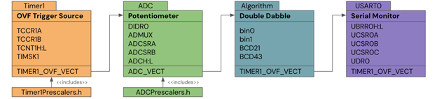
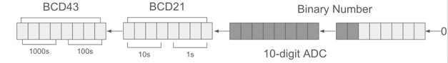
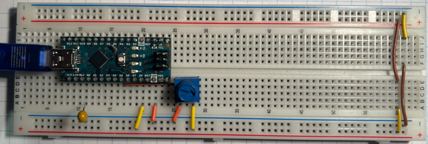

2025 · AVR Assembly + Algorithms
Double Dabble
Implemented the double dabble algorithm in AVR assembly to convert ADC binary readings into binary-coded decimal for display or serial output.

Video Demonstration
Working demonstration
The project video shows the physical build, behaviour, and final result.
 ▶ Watch on YouTube
▶ Watch on YouTube
Project Overview
Convert binary sensor data into decimal digits at assembly level.
The main difficulty was managing low-level ADC registers and implementing the repeated shift/add-3 logic without the conveniences of a high-level language.
What I built
- ADC read process using ADCL/ADCH order
- Binary-to-BCD conversion routine
- USART/serial output support
- Breadboard prototype for testing
Technical Skills
Skills demonstrated
Assembly algorithms
Applied directly in the design, build, debugging, or final integration of the project.
Register-level ADC
Applied directly in the design, build, debugging, or final integration of the project.
Binary manipulation
Applied directly in the design, build, debugging, or final integration of the project.
Serial communication
Applied directly in the design, build, debugging, or final integration of the project.
Troubleshooting
Applied directly in the design, build, debugging, or final integration of the project.
Build Story
Assembly register planning and breadboard prototype
ADC test setup
The image to the right shows the double dabble shift process, where a binary ADC value is repeatedly shifted into BCD digit registers.

Binary-to-BCD conversion
The image to the right shows the breadboard prototype for the Double Dabble project, using the ATmega328P hardware setup for ADC input and serial output.
